Setup. Teacher = D41 B + layout (stage 1) with D43 (stage 2), run with privileged evidence on the 654 ScanNet++ train scenes: 32 DSLR views, the full laser scan as points and oracle layout boxes. Its latents are the pseudo-labels. D48 student 10k = D41 B fine-tuned 10k steps on SAGE plus the teacher-labelled real chunks; control 10k = D41 B fine-tuned 10k steps on SAGE only (same init and schedule) — the pair isolates the teacher data from the extra steps. One training seed per arm; run-to-run variance is not measured. Val scenes are disjoint from the teacher's train scenes; at test no layout and no laser are used. Result: estimated depth CD 0.0830 (control) → 0.0760 (student), better in 47/50 scenes (sign p 4e-11); sensor depth 0.0686 → 0.0664, better in 39/50 (p 9e-05). The control alone matches D41 B (estimated 0.0823), so the gain is the teacher data. Gains are in recall / completeness, accuracy, all WorldRecon 2D metrics and unobserved recall; precision is about flat, and with estimated depth the FP samples in carved-free cells rise slightly (not significant).
| metric | est: Δ (student − control) | est: student better / worse | est: sign p | sensor: Δ | sensor: better / worse | sensor: sign p |
|---|---|---|---|---|---|---|
| CD | -0.0070 | 47 / 3 | 4e-11 | -0.0021 | 39 / 11 | 9e-05 |
| F@10 | +0.024 | 39 / 11 | 9e-05 | +0.000 | 28 / 22 | 0.5 |
| NC | +0.017 | 41 / 9 | 6e-06 | +0.005 | 37 / 13 | 0.0009 |
| AbsRel | -0.024 | 47 / 3 | 4e-11 | -0.013 | 43 / 7 | 2e-07 |
| normal° | -0.87 | 41 / 9 | 6e-06 | -0.58 | 40 / 10 | 2e-05 |
| LPIPS-N | -0.017 | 47 / 3 | 4e-11 | -0.009 | 34 / 16 | 0.02 |
| obs P@2cm | +0.042 | 42 / 8 | 1e-06 | +0.033 | 39 / 11 | 9e-05 |
| unobs R@10cm | +0.033 | 43 / 7 | 2e-07 | +0.011 | 36 / 14 | 0.003 |
| unobs R@5cm | +0.057 | 44 / 6 | 3e-08 | +0.037 | 39 / 11 | 9e-05 |
| FP in carved-free cells | +107.8 | 19 / 31 | 0.1 | -30.9 | 32 / 17 | 0.04 |
| line | stage 1 | CD ↓ | acc ↓ | compl ↓ | P ↑ | R ↑ | F@10 ↑ | NC ↑ |
|---|---|---|---|---|---|---|---|---|
| estimated depth | D41 B | 0.0823 | 0.0614 | 0.1032 | 0.799 | 0.874 | 0.830 | 0.779 |
| estimated depth | control 10k | 0.0830 | 0.0613 | 0.1048 | 0.799 | 0.869 | 0.827 | 0.776 |
| estimated depth | D48 student 10k | 0.0760 | 0.0583 | 0.0937 | 0.810 | 0.908 | 0.852 | 0.793 |
| sensor depth | D41 B | 0.0688 | 0.0543 | 0.0832 | 0.811 | 0.947 | 0.870 | 0.822 |
| sensor depth | control 10k | 0.0686 | 0.0545 | 0.0826 | 0.811 | 0.950 | 0.872 | 0.823 |
| sensor depth | D48 student 10k | 0.0664 | 0.0533 | 0.0796 | 0.808 | 0.955 | 0.872 | 0.828 |
| line | stage 1 | 2D compl ↑ | depth RMSE ↓ | AbsRel ↓ | normal° ↓ | LPIPS-D ↓ | LPIPS-N ↓ |
|---|---|---|---|---|---|---|---|
| estimated depth | D41 B | 0.983 | 0.247 | 0.135 | 17.48 | 0.343 | 0.403 |
| estimated depth | control 10k | 0.981 | 0.251 | 0.136 | 17.34 | 0.344 | 0.403 |
| estimated depth | D48 student 10k | 0.984 | 0.231 | 0.113 | 16.47 | 0.327 | 0.386 |
| sensor depth | D41 B | 0.989 | 0.203 | 0.084 | 14.52 | 0.304 | 0.360 |
| sensor depth | control 10k | 0.989 | 0.200 | 0.084 | 14.39 | 0.299 | 0.358 |
| sensor depth | D48 student 10k | 0.988 | 0.189 | 0.070 | 13.82 | 0.295 | 0.349 |
| line | stage 1 | obs P@2cm ↑ | obs P@5cm ↑ | obs P@10cm ↑ | obs R@10cm ↑ | unobs P@10cm ↑ | unobs R@5cm ↑ | unobs R@10cm ↑ | unobs compl ↓ |
|---|---|---|---|---|---|---|---|---|---|
| estimated depth | D41 B | 0.236 | 0.550 | 0.809 | 0.895 | 0.773 | 0.619 | 0.840 | 0.1340 |
| estimated depth | control 10k | 0.236 | 0.553 | 0.807 | 0.888 | 0.777 | 0.622 | 0.838 | 0.1346 |
| estimated depth | D48 student 10k | 0.279 | 0.596 | 0.822 | 0.928 | 0.779 | 0.679 | 0.870 | 0.1230 |
| sensor depth | D41 B | 0.357 | 0.666 | 0.822 | 0.971 | 0.782 | 0.732 | 0.898 | 0.1176 |
| sensor depth | control 10k | 0.358 | 0.662 | 0.820 | 0.973 | 0.789 | 0.741 | 0.905 | 0.1163 |
| sensor depth | D48 student 10k | 0.391 | 0.681 | 0.817 | 0.976 | 0.787 | 0.778 | 0.916 | 0.1110 |
| line | stage 1 | obs FP@5cm ↓ | obs FP@10cm ↓ | FP samples in unknown cells ↓ | FP samples in carved-free cells ↓ |
|---|---|---|---|---|---|
| estimated depth | D41 B | 0.450 | 0.191 | 13674 | 359 |
| estimated depth | control 10k | 0.447 | 0.193 | 13920 | 375 |
| estimated depth | D48 student 10k | 0.404 | 0.178 | 13783 | 482 |
| sensor depth | D41 B | 0.334 | 0.178 | 16186 | 415 |
| sensor depth | control 10k | 0.338 | 0.180 | 16335 | 415 |
| sensor depth | D48 student 10k | 0.319 | 0.183 | 16392 | 384 |
Bold = best of the three stage-1 rows within a line. Observed / unobserved = GT seen / not seen by any input view (15 cm). FP cells: predicted samples farther than 5 / 10 cm from GT inside observed space; per-scene counts of FP samples in unknown cells and in cells a camera ray passed through (carved free), on a 16 cm grid.
Scenes: per-scene CD change (student − control, estimated depth) on the paired set → the two largest gains, the two closest to the median, the two largest losses. Orbits: one shared camera path per scene, textured meshes, ceiling and upper walls cut away; top row estimated depth (D41 B | control | student | GT), bottom row sensor depth (control | student | GT). Frames: official DSLR test frames (never input views); black = no surface.
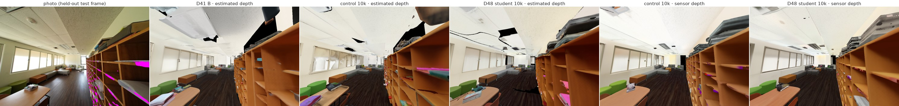
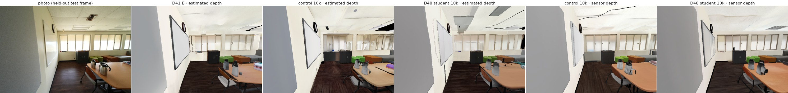
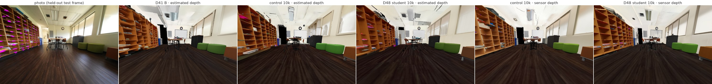
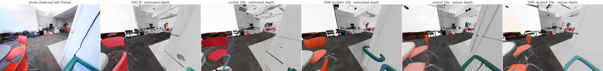
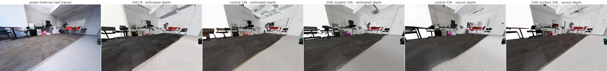
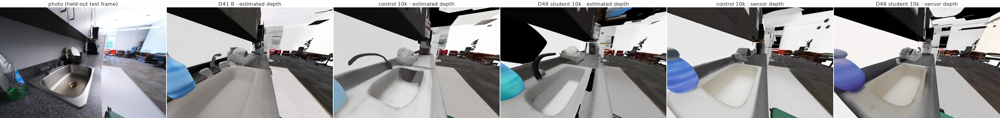
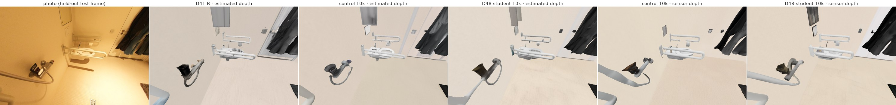
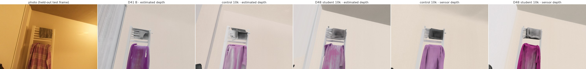
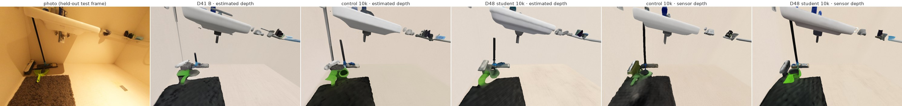
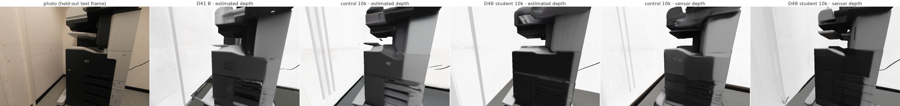
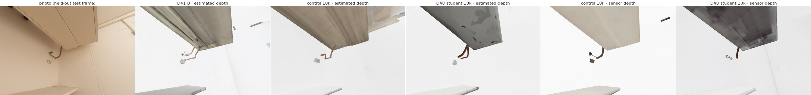
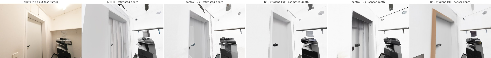
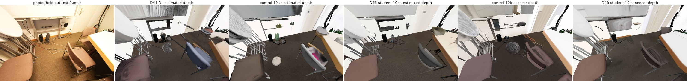
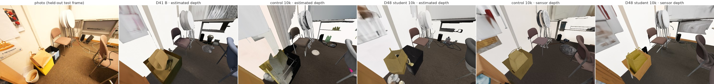
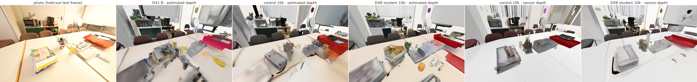
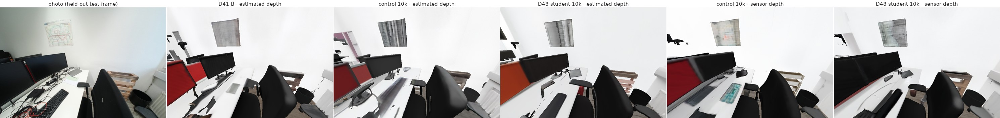
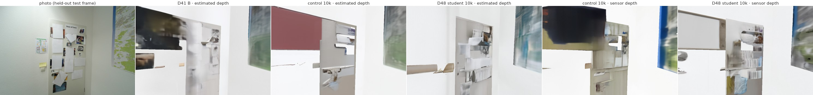
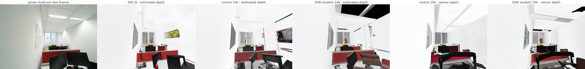
| scene | CD D41 B (est) | CD control (est) | CD student (est) | Δ CD est (student − control) | CD D41 B (sensor) | CD control (sensor) | CD student (sensor) | Δ CD sensor | normal° control (est) | normal° student (est) | unobs R@10 control (est) | unobs R@10 student (est) |
|---|---|---|---|---|---|---|---|---|---|---|---|---|
| 09c1414f1b | 0.1320 | 0.1287 | 0.1145 | -0.0143 | 0.0926 | 0.0949 | 0.0920 | -0.0029 | 21.68 | 20.68 | 0.623 | 0.710 |
| 0d2ee665be | 0.0546 | 0.0519 | 0.0491 | -0.0028 | 0.0436 | 0.0431 | 0.0434 | 0.0003 | 27.61 | 27.50 | 0.866 | 0.849 |
| 13c3e046d7 | 0.0648 | 0.0654 | 0.0633 | -0.0020 | 0.0467 | 0.0458 | 0.0434 | -0.0024 | 20.59 | 19.76 | 0.877 | 0.906 |
| 1ada7a0617 | 0.0425 | 0.0451 | 0.0424 | -0.0027 | 0.0391 | 0.0402 | 0.0380 | -0.0023 | 10.38 | 10.26 | 0.966 | 0.969 |
| 21d970d8de | 0.0605 | 0.0658 | 0.0648 | -0.0010 | 0.0544 | 0.0549 | 0.0553 | 0.0004 | 15.67 | 14.31 | 0.817 | 0.870 |
| 25f3b7a318 | 0.0465 | 0.0500 | 0.0476 | -0.0024 | 0.0423 | 0.0419 | 0.0425 | 0.0005 | 19.18 | 18.50 | 0.781 | 0.838 |
| 27dd4da69e | 1.0484 | 1.0407 | 1.0389 | -0.0018 | 1.0288 | 1.0256 | 1.0309 | 0.0054 | 22.59 | 23.04 | 0.166 | 0.169 |
| 286b55a2bf | 0.0370 | 0.0385 | 0.0381 | -0.0004 | 0.0403 | 0.0367 | 0.0392 | 0.0025 | 11.99 | 11.30 | 0.977 | 0.967 |
| 31a2c91c43 | 0.0429 | 0.0435 | 0.0389 | -0.0047 | 0.0365 | 0.0368 | 0.0361 | -0.0007 | 10.84 | 10.52 | 0.988 | 0.997 |
| 3864514494 | 0.0498 | 0.0502 | 0.0458 | -0.0044 | 0.0399 | 0.0407 | 0.0396 | -0.0012 | 16.46 | 15.53 | 0.917 | 0.968 |
| 38d58a7a31 | 0.0908 | 0.0932 | 0.0848 | -0.0084 | 0.0520 | 0.0507 | 0.0493 | -0.0014 | 17.59 | 17.11 | 0.780 | 0.815 |
| 3db0a1c8f3 | 0.0854 | 0.0919 | 0.0768 | -0.0151 | 0.0625 | 0.0620 | 0.0612 | -0.0008 | 24.07 | 18.83 | 0.598 | 0.686 |
| 3e8bba0176 | 0.0559 | 0.0576 | 0.0516 | -0.0060 | 0.0441 | 0.0447 | 0.0386 | -0.0062 | 15.20 | 15.05 | 0.823 | 0.875 |
| 3f15a9266d | 0.0450 | 0.0430 | 0.0404 | -0.0027 | 0.0399 | 0.0391 | 0.0365 | -0.0026 | 16.28 | 14.98 | 0.990 | 0.997 |
| 40aec5fffa | 0.0525 | 0.0501 | 0.0509 | 0.0008 | 0.0478 | 0.0505 | 0.0480 | -0.0025 | 12.37 | 12.81 | 0.845 | 0.817 |
| 45b0dac5e3 | 0.0454 | 0.0496 | 0.0456 | -0.0040 | 0.0380 | 0.0372 | 0.0354 | -0.0017 | 13.10 | 13.08 | 0.991 | 0.997 |
| 5748ce6f01 | 0.0536 | 0.0551 | 0.0518 | -0.0033 | 0.0447 | 0.0450 | 0.0400 | -0.0050 | 11.92 | 11.92 | 0.731 | 0.764 |
| 578511c8a9 | 0.0851 | 0.0866 | 0.0694 | -0.0172 | 0.0582 | 0.0575 | 0.0572 | -0.0003 | 22.25 | 20.81 | 0.717 | 0.772 |
| 5942004064 | 0.0509 | 0.0543 | 0.0475 | -0.0068 | 0.0423 | 0.0421 | 0.0418 | -0.0003 | 21.79 | 21.69 | 0.797 | 0.863 |
| 5eb31827b7 | 0.0617 | 0.0536 | 0.0563 | 0.0028 | 0.0451 | 0.0372 | 0.0412 | 0.0041 | 15.18 | 15.68 | 0.974 | 0.831 |
| 5ee7c22ba0 | 0.0414 | 0.0392 | 0.0351 | -0.0041 | 0.0354 | 0.0333 | 0.0321 | -0.0012 | 13.59 | 13.06 | 0.986 | 0.999 |
| 5f99900f09 | 0.1326 | 0.1389 | 0.1013 | -0.0376 | 0.0851 | 0.0813 | 0.0664 | -0.0149 | 15.67 | 15.90 | 0.529 | 0.616 |
| 6115eddb86 | 0.0863 | 0.0736 | 0.0580 | -0.0157 | 0.0479 | 0.0513 | 0.0476 | -0.0037 | 22.72 | 21.88 | 0.721 | 0.833 |
| 7831862f02 | 0.0691 | 0.0714 | 0.0684 | -0.0030 | 0.0509 | 0.0516 | 0.0483 | -0.0033 | 13.06 | 12.94 | 0.930 | 0.942 |
| 7b6477cb95 | 0.0705 | 0.0671 | 0.0617 | -0.0053 | 0.0547 | 0.0508 | 0.0461 | -0.0047 | 12.11 | 11.91 | 0.755 | 0.751 |
| 7bc286c1b6 | 0.0464 | 0.0465 | 0.0392 | -0.0074 | 0.0378 | 0.0371 | 0.0375 | 0.0004 | 10.79 | 10.48 | 0.942 | 0.951 |
| 825d228aec | 0.0449 | 0.0441 | 0.0356 | -0.0085 | 0.0383 | 0.0370 | 0.0377 | 0.0007 | 11.05 | 9.49 | 0.995 | 0.998 |
| 9071e139d9 | 0.0828 | 0.1084 | 0.0569 | -0.0515 | 0.0427 | 0.0441 | 0.0452 | 0.0011 | 19.09 | 15.70 | 0.899 | 0.947 |
| 99fa5c25e1 | 0.0693 | 0.0717 | 0.0679 | -0.0038 | 0.0583 | 0.0558 | 0.0516 | -0.0042 | 33.28 | 30.78 | 0.763 | 0.785 |
| a24f64f7fb | 0.0481 | 0.0477 | 0.0436 | -0.0041 | 0.0378 | 0.0385 | 0.0361 | -0.0024 | 16.44 | 16.01 | 0.986 | 0.992 |
| a8bf42d646 | 0.0629 | 0.0649 | 0.0589 | -0.0060 | 0.0512 | 0.0499 | 0.0493 | -0.0006 | 16.63 | 16.97 | 0.875 | 0.922 |
| a980334473 | 0.0457 | 0.0462 | 0.0413 | -0.0049 | 0.0411 | 0.0420 | 0.0405 | -0.0015 | 12.94 | 12.56 | 0.938 | 0.990 |
| ac48a9b736 | 0.0994 | 0.1000 | 0.0931 | -0.0069 | 0.0738 | 0.0737 | 0.0749 | 0.0012 | 26.73 | 23.29 | 0.527 | 0.656 |
| acd95847c5 | 0.0506 | 0.0477 | 0.0437 | -0.0040 | 0.0450 | 0.0453 | 0.0441 | -0.0012 | 13.42 | 11.39 | 0.928 | 0.937 |
| b0a08200c9 | 0.0516 | 0.0517 | 0.0499 | -0.0018 | 0.0505 | 0.0497 | 0.0487 | -0.0010 | 17.19 | 17.59 | 0.873 | 0.908 |
| bcd2436daf | 0.0370 | 0.0385 | 0.0332 | -0.0053 | 0.0388 | 0.0316 | 0.0317 | 0.0001 | 14.18 | 13.42 | 0.990 | 0.994 |
| bde1e479ad | 0.0585 | 0.0635 | 0.0579 | -0.0055 | 0.0508 | 0.0513 | 0.0482 | -0.0030 | 14.47 | 13.42 | 0.821 | 0.917 |
| c49a8c6cff | 0.0578 | 0.0576 | 0.0467 | -0.0110 | 0.0344 | 0.0328 | 0.0316 | -0.0012 | 14.72 | 14.45 | 0.921 | 0.976 |
| c4c04e6d6c | 0.0509 | 0.0514 | 0.0499 | -0.0015 | 0.0484 | 0.0481 | 0.0465 | -0.0016 | 14.56 | 12.77 | 0.939 | 0.923 |
| c50d2d1d42 | 0.0482 | 0.0490 | 0.0434 | -0.0055 | 0.0414 | 0.0420 | 0.0382 | -0.0038 | 11.87 | 10.44 | 0.945 | 0.956 |
| c5439f4607 | 0.0567 | 0.0575 | 0.0494 | -0.0082 | 0.0431 | 0.0461 | 0.0448 | -0.0013 | 21.97 | 22.21 | 0.877 | 0.921 |
| cc5237fd77 | 0.0613 | 0.0596 | 0.0498 | -0.0099 | 0.0415 | 0.0387 | 0.0386 | -0.0002 | 27.85 | 25.01 | 0.824 | 0.948 |
| d755b3d9d8 | 0.0522 | 0.0498 | 0.0473 | -0.0025 | 0.0413 | 0.0415 | 0.0380 | -0.0035 | 20.83 | 20.02 | 0.914 | 0.955 |
| e398684d27 | 0.0593 | 0.0551 | 0.0486 | -0.0065 | 0.0421 | 0.0512 | 0.0358 | -0.0154 | 17.71 | 16.14 | 0.921 | 0.930 |
| e7af285f7d | 0.0682 | 0.0747 | 0.0629 | -0.0118 | 0.0437 | 0.0427 | 0.0412 | -0.0015 | 22.20 | 21.73 | 0.650 | 0.746 |
| f2dc06b1d2 | 0.0452 | 0.0457 | 0.0405 | -0.0052 | 0.0412 | 0.0444 | 0.0404 | -0.0040 | 15.57 | 13.24 | 0.985 | 0.995 |
| f3685d06a9 | 0.0458 | 0.0546 | 0.0403 | -0.0143 | 0.0410 | 0.0425 | 0.0369 | -0.0057 | 12.13 | 12.25 | 0.861 | 0.968 |
| f3d64c30f8 | 0.1720 | 0.1643 | 0.1664 | 0.0021 | 0.1598 | 0.1647 | 0.1589 | -0.0059 | 18.52 | 17.29 | 0.590 | 0.578 |
| f9f95681fd | 0.0381 | 0.0395 | 0.0353 | -0.0042 | 0.0334 | 0.0342 | 0.0304 | -0.0039 | 19.80 | 18.75 | 0.968 | 0.975 |
| fb5a96b1a2 | 0.0561 | 0.0574 | 0.0554 | -0.0020 | 0.0477 | 0.0489 | 0.0452 | -0.0037 | 19.03 | 18.83 | 0.808 | 0.853 |
Source: experiments/genrecon_eval/results/<run>/scannetpp/{summary.csv, 2d_wr/summary_2d.csv, viewsplit/} and results/diag_v2_observed_fp_cells/<run>/ (runs complete3dd41b_20k_*, complete3dd48ctrl_10k_*, complete3dd48s1_10k_* × {pts_img, sensor}_val_8views); table values in data/metrics.json.